3 сезон¶
Статья написана в основном по постам из ВК, по памяти админа и по некоторым диалогам с игроками.
Статья незавершена, если у тебя есть информация о событиях и датах данного сезона - пиши в ЛС админу!
Помогали:
Skorohodon - помог картинками и дополнил новости из беседы
CharaBell (на момент 3 сезона - ClaraBell) - напомнила о некоторых событиях
28 июня¶
-
Был запущен 3 сезон Кошкокрафта https://vk.com/wall-210306238_600
-
Был добавлен кастомный ресурспак
-
Были обновлены достижения сервера
-
Добавлен плагин на кастомную рыбу (не рыбалку). Много рыб осталось ещё с тех времён.
-
Был обновлён чат - более красивое оформление, команды по типу [pos], [ping] и т.д., добавлены стикеры в чате
-
Начало какого-никакого РП - правила, суды, законы, начало CatPass
-
Новые напитки и их текстуры, обновление ВК бота и добавление команды "кто"
-
Попасть на сервер можно было только написав заявку и ответив на вопросы в ней
-
Новые патчи и обновления теперь выпускались не постами, а статьями
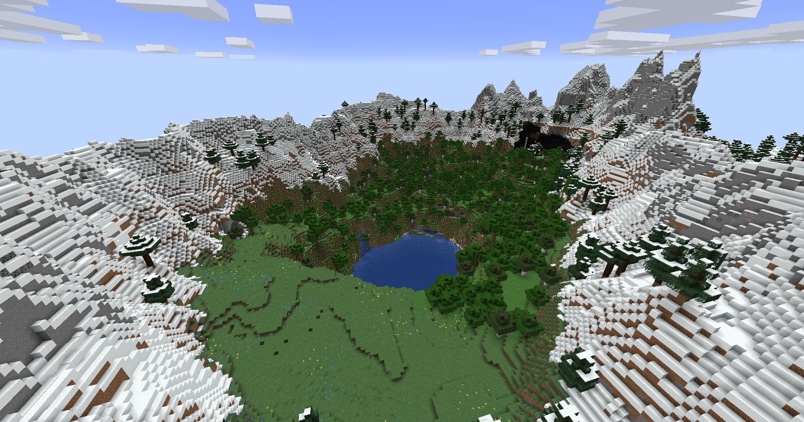
1-2 июля¶
-
Соревнование рыбалки на целый день. Призы - 32, 16 и 8 АБ за 1, 2 и 3 места соответственно.
-
Различные баг-фиксы, вернулась онлайн-карта
3 июля¶
Были проведены прятки на отдельной крутой карте
Победителей не было, но зато круто провели время
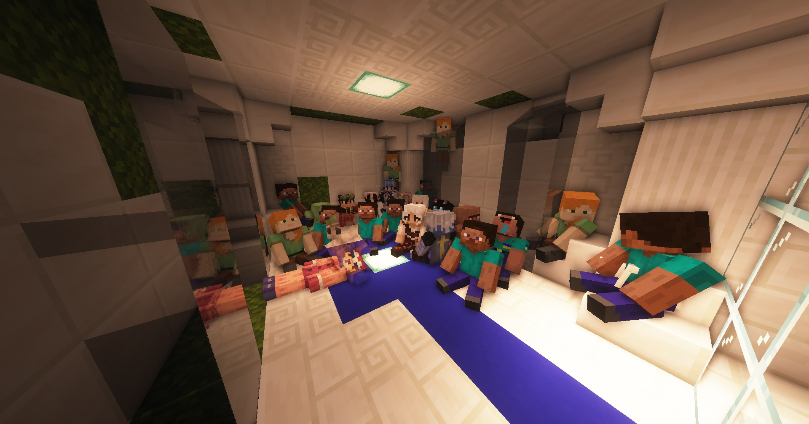
5 июля¶
-
Были добавлены медали - префиксы перед ником за разные достижения - строительство, поиск багов, крутые идеи. Сейчас это заменено CatPass - https://vk.com/wall-210306238_650
-
В этот же день dimastein, цитирую, замечает одного игрока в лодке, который, по информации друга, построил и туннель из спавна и мост вниз. Оказалось что это девушка с ником ClaraBell. В этот же день dimastein узнал о том, что она хочет к нему в клан, и он её успешно принял к себе.
9 июля¶
- Была объявлена пятая олимпиада Кошкокрафта! Участие было сделано через вк-бота, а награды снижены.
10-14 июля - Начало спавна¶
-
Построена церковь на спавне игроком ytrbqdkflbvbhy
- Оказывается его ник - "некийвладимирн" на английской раскладке
-
Построен мост игроком CharaBell
- Потом она была отругана за то, что мост был не очень красивый. В итоге она его перестроила.
-
Были добавлены три новых напитка и достижение "Вместо доната"
-
Добавлено логирование инвентарей, теперь их можно восстанавливать
-
Гигант был перенесён с 2 сезона на третий
-
Под гигантом было поставлено 576 сундуков. За заполнение всех за неделю будет добавлен сэкс
-
Начато полноценное строительство спавна
-
Было добавлено кучу новых шляп, стикеров в ресурспак, рыб, достижений и прочего
-
Игроком Victor_Morgan был проведён ивент https://vk.com/wall-210306238_767
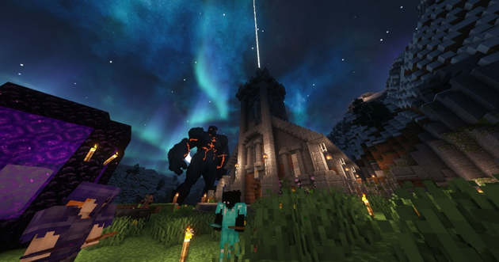
15 июля - Гном гыча мафон: Начало¶
-
На сервер попал игрок El_Ragan - основатель клана гномов. Этот игрок сразу же пригласил вместе с собой человек 10, и они начали неподалеку от спавна строить свою подземную базу.
-
С его слов - он ушёл с прошлого проекта из-за глупой администрации. По слухам - их забанили за токсичность и мудачество
-
В дальнейшем его действия приведут сервер к конфликту и к мемам "гном гыча мафон"
-
16-17 июля - открытие Энда¶
-
Был объявлен ивент по открытию Энда
-
Энд был открыт
- Энд был ограничен до 10к, и поэтому все элитры разобрали очень быстро. Но то, что все элитры забрал один клан Гномов очень разозлил игроков и, в частности, город Фыркамск. Между ними начался конфликт
-
В Энде была анархия за зоной, отмеченной красной шерстью https://vk.com/wall-210306238_788
-
На открытие пришло 44 игрока и ТПС стабильно стоял на 2-3
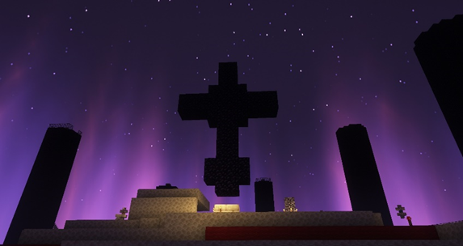
18 июля¶
-
На сервер пробрался хакер и был проведён ивент по его поимке https://vk.com/wall-210306238_798
- Его поймал игрок Krazers - он получил арбалет с Быстрой перезарядкой V
-
В этот же день один другой чувак захотел по-настоящему взломать сервер https://vk.com/wall-210306238_815
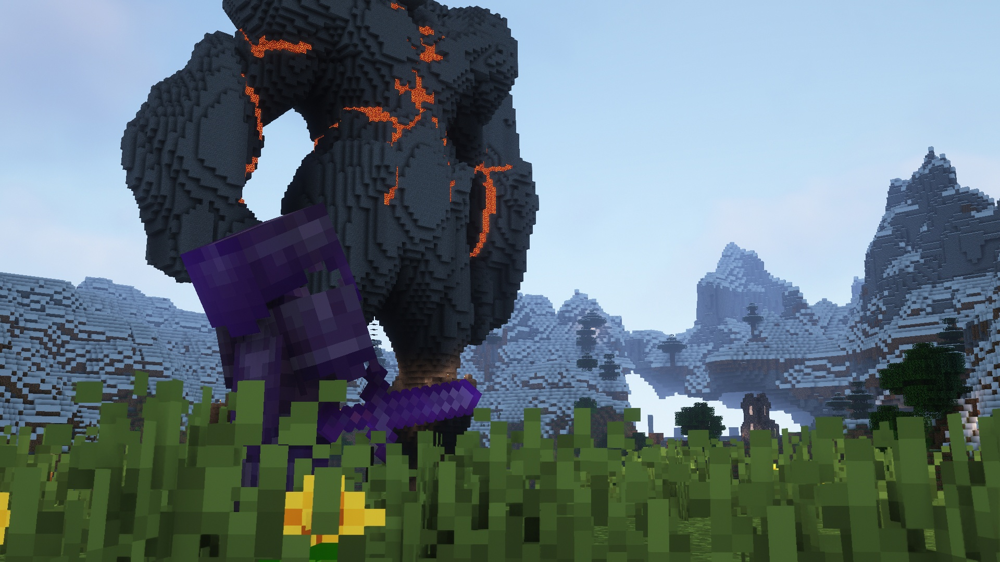
19 июля¶
-
Путём голосования анархия в Энде была теперь только с 12:00 до 22:00 https://vk.com/wall-210306238_852
-
Есть ли анархия в Энде показывала команда "энд" боту в ВК
20-23 июля - Новые города¶
- Было построено Древо спавна

-
Дефолтые скины Стива и Алекс были заменены котиками. Они стоят до сих пор!
-
Были добавлен крафты источников света
-
Благодаря CharaBell были добавлены несколько новых шляп, которые есть до сих пор!
-
Был создан официальный город ФырCUMск под предводительством dimastein.
-
Список жителей: dimastein Minifrost2 Ociket pasterTime den4ik2009da God_of_hentai BTR_MAGISTR lofiry ClaraBell Victor_Morgan HelsyMine
-
Это был РП город, населенный лисами.
-
-
Был создан официальный город POSO-CITY под предводительством whiterr_ и riiiba.
-
Список жителей: Ra1DeR_ riiiba Ogresty Lighttree JakeLookley whiterr_ rami_malook jOSef2551
-
Это был РП город рядом со спавном.
-
23-26 июля - Начало войны¶
- Была проведена свадьба ClaraBell и dimastein! Видео со свадьбы - https://vk.com/wall-210306238_889

-
Началась эскалация конфликта ВСЕГО СЕРВЕРА и гномов El_Ragan'а. Причиной конфликта было ужасно токсичное поведение и монополия на элитры вторых.
- Админу были переданы вручную написанные 15 жалоб на один клан от игроков трёх городов (ПОСО-СИТИ, Фыркамск и Ебенград).
26-28 июля - Мидланд¶
-
Мини-ивент от Qwixky - бывший админ - https://vk.com/wall-210306238_931
-
Были множественные нарушения от клана гномов - некоторые читерили, сам Владимир El_Ragan убивал невинных и прочее.
-
Официально было открыто "Королевство Мидланд" - клан/город во главе с M0P5. Жители города: M0P5, VG0L0VU, Shiki2018, sulfur, justhatemee, Rijifly, ReKin, Gwlasow.
28 июля - Судная ночь¶
-
Была проведена Судная ночь игроком Asp1re. На целый день на сервере была устроена анархия с призами за кол-во убийств - https://vk.com/wall-210306238_954
- Клан гномов, конечно же, занял весь ивент.
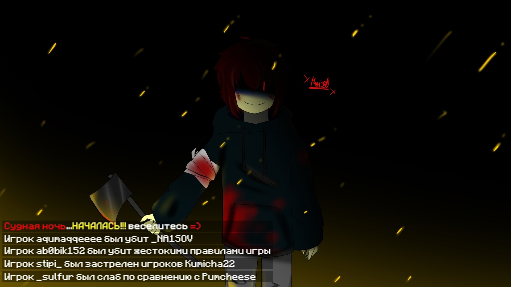
30 июля - Закулисье¶
-
Под неофициальным городом Форкок imuedennui построил лабиринт в стилистике закулисья. Этот лабиринт будет пугать игроков еще не один месяц, так как в нем находилось около 20 варденов.
- На тот момент у imuedennui была ОПка на правах близкого друга админа.
1 августа - Падение гномов¶
-
Примерно в это время был забанен El_Ragan и половина его клана (остальная половина попросту не играла). Причиной бана были 20 жалоб от разных игроков, ужасное поведение самого Владимира и ультиматум, поставленный админу одним из городов.
- Ультиматум был "Либо его бан, либо мы всем городом уходим". Говнарский ход на который админ больше вестись не будет
-
Был добавлен EmoteCraft
-
Были обновлены правила ПвП - оно было разрешено лишь в некоторых случаях
-
Был объявлен ивент гонок на лодках
2 августа - Незер-хаб¶
-
Открыт Незер-хаб, спроектированный Lofiry https://vk.com/wall-210306238_989
- Через некоторое время после окончания строительства незерхаба KUREVO69 начал перестраивать все 4 хайперлупы в аду, перестройка заняла примерно 2 месяца, а с ресурсами ему помогал весь сервер.
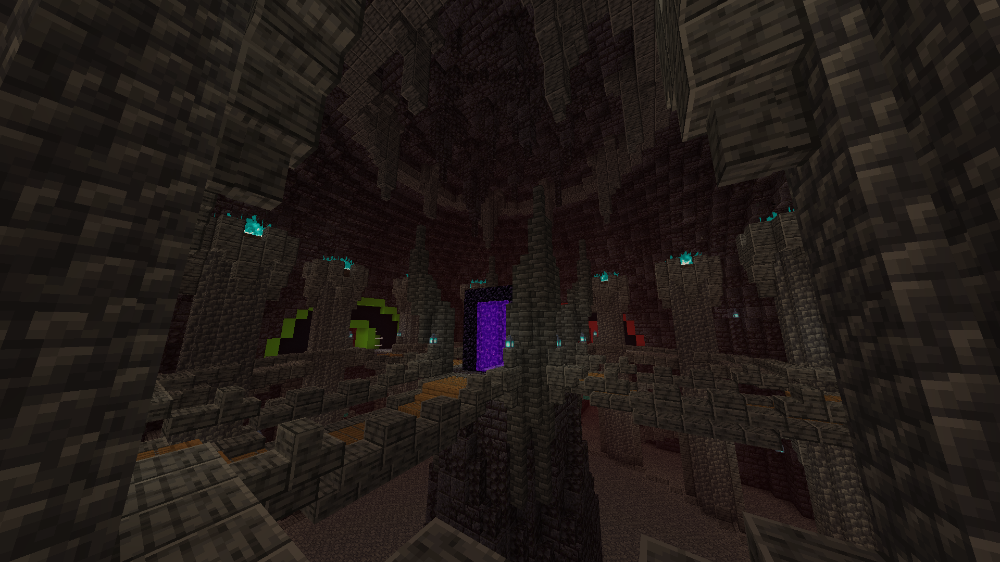
8 августа¶
- Был проведён аукцион вещей забаненных игроков https://vk.com/wall-210306238_1112
13 августа¶
-
Большое обновление ресурспака, хостинга и сервера - https://vk.com/wall-210306238_1136
-
Группа сервера набрал 500 подписчиков https://vk.com/wall-210306238_1149
17 августа - Выборы¶
-
Начало выборов президента на Кошкокрафте! https://vk.com/wall-210306238_1166
-
Всего было 6 канидатов - Papamama, abobik152, Liberaha, Victor_morgan и Denchik. В последствии победил Victor_Morgan, заручившись поддержкой ФырКамска
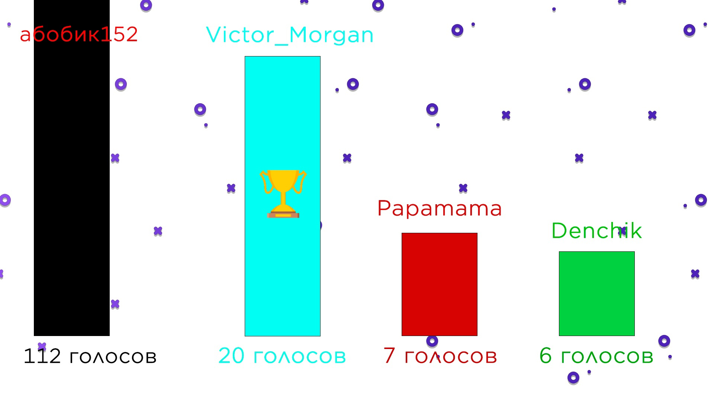
21 августа - Ебенград¶
-
Был основан Ебенград под предводительством LittleGirlsLover, Pumcheese, Ghekkish и RAT_GEL.
-
Список жителей: Pumcheese Ghekkish LittleGirlsLover RAT_GEL Jeas Blackdragon261 KeniRaym LiteTuchka Poogalos Razond SM1LLYS tokasssabtw shamanishka zioninside ZureM kainet
-
Это был угар-город в ебенях, в будущем самым большим по населению. Почему самым большим? В город принимали всех новичков через 5 минут после того, как они зашли. Хороший ход, только играть они оставались недолго.
-
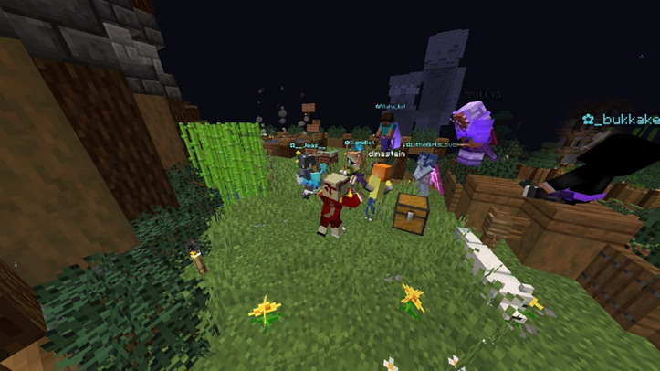
22-24 августа - Большая ошибка¶
Один из основателей Ебенграда - LittleGirlsLover - купила шуточный донат, добавленный на сайт - ОПку за 10 тысяч рублей. Выбора кроме как выдать ей ОПку не было, и это повлияло в целом на отношение игроков к админу.
Как минимум - ушли два админа StCrouse и Liberaha, а за ними и EZENMYR с Qwixky, т.к. были друзьями и из одного города.
Вторая половина 2022 года впринципе не самая лучшая для админа и его психики, делал очень много необдуманных поступков и ошибок (потратил весь донат на доставку еды и покупал бутылку виски раз в 3 дня, начал отношения на расстоянии с той самой LittleGirlsLover)
Сейчас ситуация наладилась, ведь в жизни появился хороший человек, который привёл мозги в порядок, и таких ошибок наш админ больше никогда не допустит =)
24-30 августа¶
-
Были добавлены кастомные пластинки и пару вещей в ресурспак https://vk.com/wall-210306238_1239
-
Сервер был обновлён до 1.19.2 https://vk.com/wall-210306238_1283
1 сентября - Мон-триедж¶
- Был основан город Мон-Триедж игроком Makakas. Скриншоты города и его реклама - https://vk.com/wall-210306238_2723
2 сентября - Форкок¶
-
Город Форкок был зарегестрирован официально. Это город, находящийся среди 4 гор (от чего и название "Four Cock" - четыре пениса)
- В нём жил админ и его друзья: Skorohodon, Razond, imuedenuui
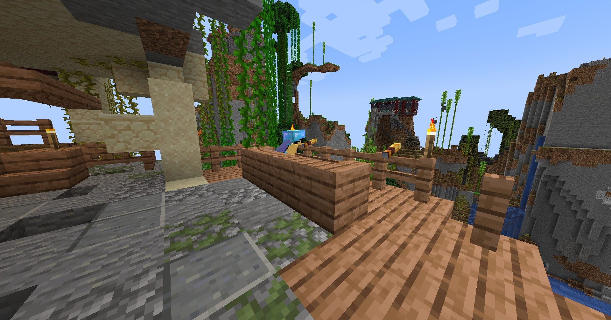
-
9 сентября - Новый город
-
Открытие строительства Сан-Терракоты под предводительством не самого адекватного человека. Да, Илья, я про тебя. https://vk.com/wall-210306238_1368
-
Неадекватный он из-за своих высказываний и поведения для своих 24 лет. В целом хороший парень, пытался делать хорошо для сервера, но язык за зубами держать не умеет, от этого его репутация упала для большинства игроков.
-
У города планировалась своя валюта, свои бизнесы, свои постройки, даже была проведена экскурсия по городу, но, к сожалению, ничего дальше концептов не продвинулось.
-
10 сентября¶
-
За осквернение кладбища на спавне, в котором распологались вещи ушедших игроков, игрок Asp1re был навсегда забанен.
- В последствии он купил разбан на сервере
-
Был проведён аукцион вещей забаненных игроков: Asp1re, LiteTuchka и gagaty
10 сентября - Уход президента¶
- На сервер зашёл няшечка _bykkake747_ - грибной папа и человек, нарисовавший для сервера половину ресурспака
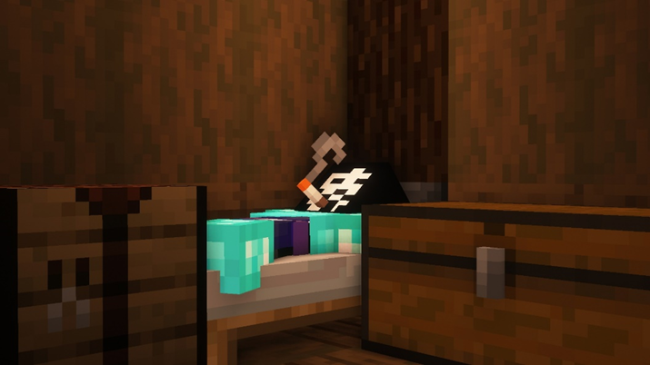
-
Объявление об расширения Энда до 15к блоков
-
Добавлены достижения посещения кланов/городов.
-
Были добавлены кастомные элитры (например: незеритовые, имели прочность 10), шмотки, еда, текстуры, новые напитки для городов
-
Были добавлены первые минимальные цены в магазинах для улучшения экономики сервера
-
Президент Victor_Morgan покинул свой пост под давлением окружающих. Проще говоря - не справился с ответственностью.
- После этого он занял более лёгкую роль - Модератор
11-15 сентября¶
-
Был проведён огромный ивент Denchik'ом https://vk.com/wall-210306238_1417
-
Сегодня Сережа «Szarkan» Юдин хорошо покушал и придумал крутое обновление https://vk.com/wall-210306238_1425
16 сентября¶
- Начались новые выборы президента, которые теперь работали через ВК бота. Кандидатами были CharaBell, Skorohodon, Papamama, KUREVO69 и Pumcheese. В итоге в борьбе между Pumcheese и Skorohodon выиграла Pumcheese. Роковая ошибка...
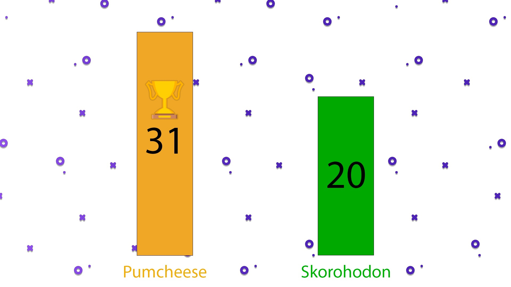
-
Примерно в это же время игрок Skorohodon получил ОПку. Опять же - на правах друга и на высоком доверии
-
Примерно в это же время началось строительство города Сипуси (англ. Sea Pussy) - большого научного центра под водой в пещере. Был достроен лишь частично, и там никто и не жил.
- Стротельтсвом занимались Skorohodon, Szarkan и AKai
21 сентября - Шутка. Или нет?...¶
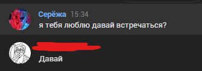
28 сентября - 1 октября¶
-
Запуск масштабного ивента от города Фыркамск под предводительством ClaraBell по поводу Скалк-вируса. Игрокам надо было разгадывать загадки, квесты и шифры - https://vk.com/wall-210306238_1535
- Было проведено много РП сцен и борьба за заразу.
-
Примерно в это же время игрок Skorohodon переоборудовал "Храм смерти", построив вместо него музей сервера, где были выставлены игроки, которые внесли огромный вклад в сервер. Под каждым стендом любой игрок мог написать отзыв.
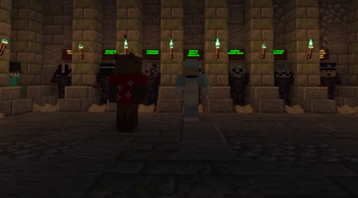
1 октября¶
- KUREVO69 и DENTRY спроектировали обновленный спавн, который включал здание для проведение аукционов, красивейший декор для озера, а также множество небольших домиков. Спавн был перестроен примерно за две недели игроками: KUREVO69, whiter_, Skorohodon, capybruhra, HokuPeanut и Errorka.
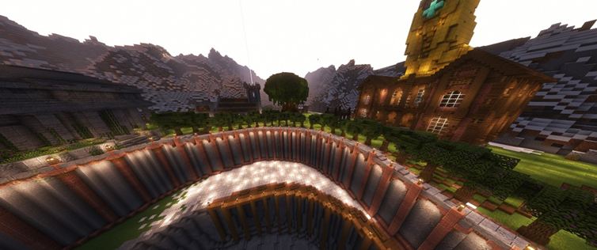
2 октября¶
- Первые и последние указы президента Pumcheese - https://vk.com/wall-210306238_1657
4 октября¶
-
Впервые чат разделён на локальный и глобальный
-
Новые городские напитки, достижения и по мелочи https://vk.com/wall-210306238_1672
9 октября¶
- Был снят трейлер сервера игроком gerax2302 - https://vk.com/wall-210306238_2372
11 октября¶
- Был достроен Кафедральный собор игроком God_of_hentai - https://vk.com/wall-210306238_2416
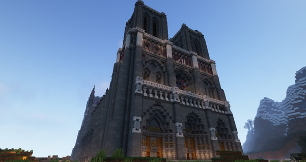
14 октября¶
- 1000 подписчиков в группе! https://vk.com/wall-210306238_2449
15 октября¶
-
Совместными усилиями Szarkan, Skorohodon, gerax2302 и imuedennui создается Декларация Кошкокрафта, которая должна была частично регулировать игровой процесс, однако особого успеха эта идея не возымела.
- Также в этот день Asp1re решает вернуться на сервер и покупает разбан, однако сталкивается с буллингом в лице Skorohodon, Asp1re чуть ли не уходит с сервера, но под угрозой лишения опки Skorohodon извинился и все было хорошо.
19 октября¶
К дню рождения Сережи Котикова Asp1re1337 и gerax2302 записали видео, где игроки поздравили админа с днем рождения.
Также на спавне была построена статуя кошкомальчика-админа от dimastein и whiterr_ (хех, голубки)
22 октября¶
- На сервер попадает Berserk72ru - тоже важная персона в истории сервера
24 октября¶
- Плейбой, гений, легенда, миллиардер и просто долбаеб Papamama основал город Папагород - https://vk.com/wall-210306238_2546
Где-то 25-30 октября¶
- ClaraBell переделала Гномье Королевство в деревню новичков, там были красивые дома, поле, а также ресурсы необходимые для начального выживания.
26 октября¶
- Вышел новый трейлер Кошкокрафта, снятый уже админом и озвученный StCrouse - https://vk.com/wall-210306238_2556
29 октября¶
-
Ничего не сделав, Pumcheese уходит с поста президента под давлением игроков - https://vk.com/wall-210306238_2562
-
Появилось первое подобие полиции, которая должна была проверять логи и сажать людей в тюрьму, главой полиции стал SM1LLYS, он занимал этот пост вплоть до конца 4 сезона. Именно в этот момент баны были заменены на тюремное заключение.
30-31 октября¶
-
Первое добавление CatPass и полиции - https://vk.com/wall-210306238_256
-
Концерт группы SunShine под предводительством Berserk72ru в городе Фыркамск
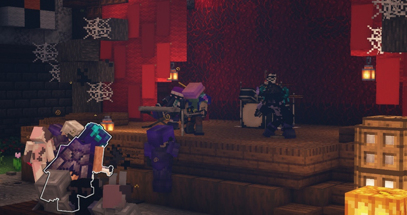
31 октября - 3 декабря¶
- Начались раскопки энда для строительства Энд-хаба, спроектированного KUREVO69. За месяц игрокам удалось полностью уничтожить весь основной остров. В копании принимали участие: KUREVO69, Skorohodon, lolikkiller, LeChat, Asp1re1337, Berserk72ru, Eufreitor и FreyrLokken.
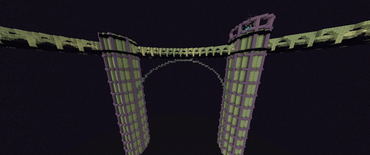
1-6 ноября¶
- Мелкие фиксы, обновы и мини-ивенты
7 ноября¶
- Был зарегестрирован город Воронеж, который был воплощением города …Воронеж. Жители города: SKINXED3, Serega_Suncov, EDGA5R1991, Anton_82. Они планировали провести олимпиаду, построили целый стадион, но идея так и не была окончательно реализована.
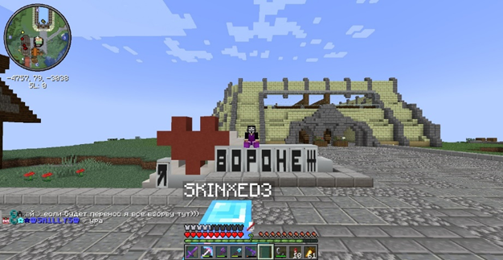
13 ноября¶
- Был проведен аукцион вещей игроков, не заходивших на сервер больше 2 месяцев, было очень много ценных лотов, большую часть которых выкупил Allaha_kot, так как был самым богатым игроков на сервере, из-за этого его лишили права участвовать в аукционах. Самый же ценный лот – удочка ушедшего админа StCrouse, её выкупил dimastein.
21 ноября¶
-
Админ ворует игрока ClaraBell в свою жизнь, а она и не против :3
- Встречаться начали, мямямя
26 ноября¶
- KUREVO69 создал единственную на сервере легальную Гигакирку, которая была зачарована на эффективность и учачу X, собрав для этого 64 незеритовых блока!!!
29 ноября¶
- Серверу исполнился год! Но, из-за состояния админа после выпивания бутылки виски чуть ли не каждые 3 дня, админ ничего не сделал, просто выпустив пост с благодарностями.
29-30 ноября¶
- Мини-фиксы, мини-ивенты
2 декабря¶
- Ивент "Осада замка" на карте, спизженной у El_Ragan - https://vk.com/wall-210306238_2791
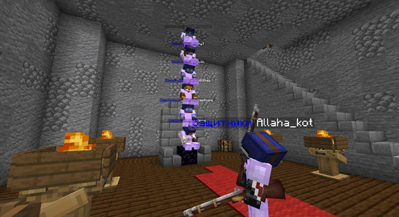
3 декабря¶
-
Началось строительство спроектированного игроком KUREVO69 Энд-хаба - проект был очень крутым и красивым, но, увы, не был построен. https://vk.com/wall-210306238_2804
-
В силу вступил сухой закон, который запрещал хранение, варку и продажу алкогольных напитков. Была создана криминальная организация во главе с TonySoprano, которая занималась кражей напитков для продажи в 10 раз дороже, нередко члены организации представлялись полицейскими и вымогали у игроков штрафы за хранение алкоголя, но по большей части они занимались всякой хуйней.
-
В это же время странствующему торговцу добавлены всякие читерные предметы, по типу кости на откидывание 255 и книжек на высокие зачарования, купить их можно было за яйца дракона. Яйцо дракона выпадали каждый раз при её убийстве.
-
Остров в энде окончательно разрушен, но игрок KUREVO69 уходит с поста министра строительства и не скидывает игрокам схематику Энд-хаба. Новым министром строительства становится Berser72ru, примерно за неделю он проектирует новый Энд-хаб, который к сожалению так и не был построен из-за скорого завершения сезона.
12 декабря¶
- На спавне построили новогоднюю Ёлочку и украшения к Новому году
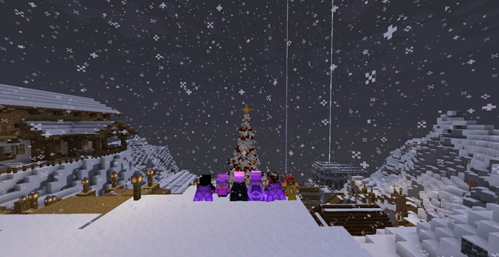
20 декабря¶
- В связи с концом сезона, на сервере была объявлена анархия, все города, спавн, хаб и базы были уничтожены меньше чем за день.
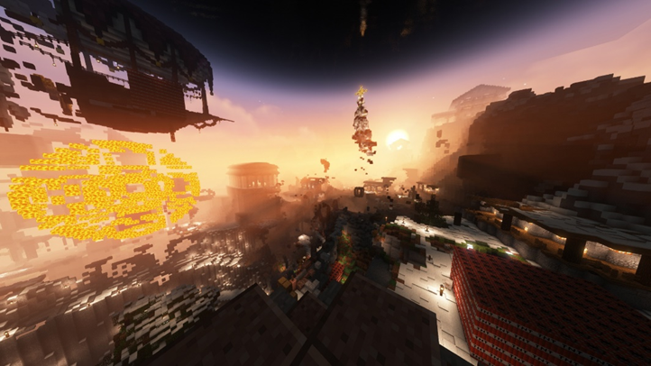
-
Декабрь-январь
-
Подготовка к вайпу и 4 сезону! На 4 сезоне спавн был изначально, планировались НПС, развитие РПГ и многое многое…
3 сезон закончился где-то между 20 и 28 января, точно не уверен. Карта мира сохранена на компьютере админа.
Топ игроков по онлайну за весь сезон¶
-
dimastein - 1036 часов 20 минут
-
ClaraBell - 996 часов 24 минут
-
_RAT_GEL_ - 725 часов 32 минут
-
whiterr_ - 596 часов 58 минут
-
Skorohodon - 588 часов 50 минут
-
KUREVO69 - 539 часов 29 минут
-
Allaha_kot - 530 часов 12 минут
-
Pumcheese - 499 часов 3 минут
-
LittleGirlsLover - 411 часов 11 минут
-
StCrouse - 401 часов 38 минут (r.i.p.)